「我女兒什麼時候來接我？」
王奶奶，82 歲，中度失智。你們坐下才 10 分鐘，她已經問了第五次，每次都很認真地看著你。
參考回應方向
- 不說「你剛剛問過了」，每次都像第一次一樣回應
- 回應背後的想念：「你很想女兒喔，她小時候是怎樣的孩子？」
- 把答案寫在紙上，讓她不安時可以看
- 不要承諾「等一下就來」，以免她一直等待而更失落
先猜猜看，點選答案就會看到解答。數字為 2025–2026 年公布的政府統計。
倡導關懷人走進長照機構，陪伴沒有家屬或家屬較少探視的長輩。我們不取代照服員與護理師，我們帶來的是固定出現的面孔、願意聽的耳朵，以及「有人記得我」的感覺。
長輩可能忘記你說過的話，
但會記得你帶給他的感覺。
| 時間 | 內容 | 形式 |
|---|---|---|
| 10:10–10:20 | 開場：倡導關懷人的角色 | 講述 |
| 10:20–11:10 | 認識失智、溝通原則、情緒與行為的辨別與應對 | 講述＋示範 |
| 11:10–11:55 | 上午分組演練：四個失智情境 | 分組角色扮演 |
| 11:55–12:10 | 分享與回饋 | 全體討論 |
| 12:10–13:10 | 午餐休息 | |
| 13:10–14:20 | 認識失能、志工的界線、不同狀況的溝通方式、陪伴活動 | 講述＋體驗 |
| 14:20–14:30 | 休息 | |
| 14:30–15:00 | 傾聽與情緒支持、一次訪視的流程、觀察與通報 | 講述 |
| 15:00–15:50 | 下午分組演練：四個失能情境 | 分組角色扮演 |
| 15:50–16:10 | 綜合回饋、照顧自己、Q&A | 全體討論 |
先看懂行為背後的需要，再決定怎麼回應。
失智症是大腦疾病造成的認知功能退化，會影響記憶、判斷、語言、方向感與情緒，程度嚴重到影響日常生活。常見類型有阿茲海默症、血管性失智症、路易氏體失智症與額顳葉型失智症，不同類型的表現不太一樣。
| 情況 | 一般老化 | 失智症 |
|---|---|---|
| 忘記事情 | 忘記部分細節，提醒後會想起來 | 整件事都忘了，提醒也想不起來 |
| 時間地點 | 偶爾搞錯今天星期幾 | 不知道自己在哪裡、以為還是幾十年前 |
| 說話 | 偶爾一時想不起某個詞 | 常說不出要的詞，用「那個、那個」代替，話題重複 |
| 情緒個性 | 大致穩定 | 容易焦慮、多疑、易怒或變得退縮冷淡 |
| 自我察覺 | 知道自己記性變差 | 常不覺得自己有問題 |
最上層放的是最近的事，最底層是年輕時的事。失智像書架從上面開始搖晃，最近的記憶先掉下來，童年、工作、養兒育女的記憶留得最久。所以長輩可能記不得早餐吃什麼，卻能清楚說出當年在哪裡工作。
事實記不住，感覺卻會留下。被糾正、被笑、被催促的不舒服會累積成不安；被溫柔對待的安心感也會留下來，即使他叫不出你的名字，也會對你比較放鬆。
換位想一想：如果你一覺醒來，身邊都是不認識的人，有人告訴你「這是你家」，你卻記得家不是長這樣，你會不會害怕、想回家？許多被稱為「問題行為」的反應，其實是在表達這份害怕。
失智長輩常搞不清楚眼前是誰、現在幾點、自己在哪裡，所以對陌生人容易猜疑。定向感問候的重點不是考他，而是由我們主動把人、事、時、地、物介紹清楚，讓他不用猜，自然就安心。
我是誰、從哪裡來；怎麼稱呼您
今天來做什麼、會待多久
今天星期幾、上午或下午、快到什麼節日
我們現在在哪裡、坐在什麼地方
我帶了什麼、手上的東西是什麼
「王奶奶好，我是雙福基金會的志工小美，這位是我的夥伴阿明。今天是星期六上午，快到中秋節了。我們在護理之家的交誼廳，今天來陪您聊天半個小時。我帶了一本老照片，等一下想跟您一起看。」
配戴寫著名字的大字名牌，每次見面都完整介紹一次，即使已經認識很久。
| 容易讓長輩受挫的說法 | 可以試著這樣說 |
|---|---|
| 「你剛剛不是問過了嗎？」 | 「你很在意這件事喔，我再跟你說一次。」 |
| 「你女兒不會來啦。」 | 「你想女兒了。跟我說說她小時候的樣子好不好？」 |
| 「沒有人偷你的錢！」 | 「錢不見了一定很著急，我陪你一起找找看。」 |
| 「這裡就是你家，不能回去。」 | 「你想回家看看。家裡現在誰在等你呢？」 |
| 「你記得我是誰嗎？」 | 「阿伯好，我是志工阿明，上次有來陪你聊天。」 |
| 「不要亂動，坐好。」 | 「我們一起坐下來喝口水，休息一下好嗎？」 |
| 「你媽媽早就過世了。」 | 「你想媽媽了。媽媽以前都煮什麼給你吃？」 |
失智長輩出現焦慮、多疑、躁動、重複、想回家等情況，醫療上稱為「精神行為症狀（BPSD）」。對志工來說，最重要的一句話是：行為是一種表達。先找原因，常常就找到解方。
疼痛、口渴、肚子餓、想上廁所、便秘、太熱或太冷、累了、看不清楚、聽不清楚
太吵、人太多、光線太暗、陌生的人或事物、作息被打亂、傍晚天色變化
害怕、孤單、無聊、覺得自己沒用、想念家人、被催促或被當小孩對待
| 常見表現 | 他可能想說的是 | 志工可以這樣做 | 示範 |
|---|---|---|---|
| 重複問同一件事 | 「我很不安，我需要確定。」 | 每次都耐心回答，回應背後的擔心；也可以把答案寫在紙上給他看。 | |
| 說東西被偷了 | 「我找不到，我覺得失去掌控。」 | 不辯解、不指認，陪他一起找；找到時讓他自己「發現」，並告知機構人員。 | |
| 想回家、收拾行李 | 「我覺得這裡不是我的地方，我有責任要回去。」 | 問問「家裡有誰在等你」，聊家裡的事；陪他走一走，再自然引導到其他活動。 | |
| 傍晚特別焦躁（日落症候群） | 「天暗了，我好不安／我好累。」 | 傍晚訪視時放慢節奏，找光線充足、安靜的地方，給簡單熟悉的事情做。 | |
| 生氣、大聲、推開人 | 「我害怕／不舒服／不想被這樣對待。」 | 先退一步保持距離，放低音量，不要硬拉或碰觸；暫停原本的話題，必要時請機構人員協助。 | |
| 看到或聽到不存在的東西 | 「我真的看到了，我很害怕。」 | 不要說「沒有啦」，先回應感受：「聽起來很可怕，我在這裡陪你。」並告知護理人員。 | |
| 退縮、不說話、沒反應 | 「我累了／我覺得沒有人懂我。」 | 不勉強互動，安靜坐在旁邊也是陪伴；可以握手、放熟悉的老歌，給他時間。 | |
| 找已過世的親人 | 「我好想他，我需要他在身邊。」 | 不提醒對方已過世，回應思念，請他說說那個人的故事。 | |
| 不認得志工、拒絕互動 | 「你是陌生人，我不安全。」 | 從正面重新自我介紹，尊重拒絕，預告等一下再來。 | |
| 坐立不安、反覆喊叫 | 「我身體不舒服，但說不出來。」 | 先找身體原因（如廁、疼痛、口渴、太冷熱），描述給機構人員，不自行處理。 |
先停下手邊的事與想說的道理。深呼吸，觀察他的表情、身體、周圍環境，想想可能的原因。
說出你看到的情緒：「你很著急喔」「你在擔心家裡」。讓他知道你懂，不急著解決。
情緒緩下來後，轉到他喜歡的話題或活動：老照片、拿手菜、喝口水、到窗邊走走。
順序很重要：沒有先「接」就「轉」，長輩會覺得被敷衍。
長輩有情緒時，按「你、我、他」的順序說三句話：先替他說出感受，再表達將心比心，最後邀他一起想辦法。可以和「停、接、轉」一起用，它就是「接」到「轉」的說法。
覺察到對方的情緒，替他說出來。
您等了一整個下午，覺得被冷落，很難過。
要是我遇到這樣的事，我也會有這樣的情緒。
要是我也等這麼久，我也會很難過。
不急著說教，邀他一起找出路。
我們再一起想辦法，好嗎？
| 長輩說 | 你 | 我 | 他 |
|---|---|---|---|
| 「我的錢包被偷了！」 | 錢包不見，您一定很著急。 | 要是我的錢包不見，我也會急得團團轉。 | 我們一起找找看，好嗎？ |
| 「我要回家！」 | 您很掛念家裡。 | 換作是我，離家這麼久也會想回去看看。 | 我們先坐下來，您跟我說說家裡的事，再一起想辦法，好嗎？ |
| 「都沒有人理我。」 | 您覺得孤單，好像被忘記了。 | 我要是一整天沒人說話，也會很悶。 | 我今天陪您坐一下，等一下也一起跟護理師說，好嗎？ |
| 「我這樣活著是拖累人。」 | 您覺得自己沒用，心裡很苦。 | 如果我身體這樣，我也會很難接受。 | 我們一起想想，有什麼事會讓您舒服一點，好嗎？（並告知護理人員與社工） |
「我」這句是將心比心，不是講自己的故事；說完一句就回到長輩身上。
開頭兩段示範「定向感問候」與「你、我、他」，第三段示範離開時的「4F」，後面十段是十種常見的情緒與行為。選一個情境，按「下一句」逐句看。每一句志工的回應都附上為什麼這樣說；紅色劃線的是容易脫口而出、但要避免的說法。
更多溝通方法（STE2P、FOCUSED、確效療法、DICE、避開老人語等）與示範對話，請見 失智症溝通技巧資料庫。
長輩說了這句話，你會怎麼回？點選一個答案，看看回饋。目前答對 0 / 8
志工的任務是陪伴與觀察，不自行處理醫療或安全狀況。通報機構人員後，訪視結束也請告知社工。
80 位學員分成 20 組，每組 4 人，對應實際服務的「兩人一組」。十個情境對應 1-5 的十種行為：單數組演情境一、三、五、七、九，雙數組演情境二、四、六、八、十，每組挑其中兩個演出。每個情境演 5 分鐘、討論 5 分鐘，然後輪換角色。演完可以按「看示範對話」對照。
王奶奶，82 歲，中度失智。你們坐下才 10 分鐘，她已經問了第五次，每次都很認真地看著你。
李爺爺，78 歲，一見到你就很激動，指著走廊上的照服員，說她偷了他的錢包。
陳奶奶，85 歲，把衣服塞進塑膠袋，說家裡的雞還沒餵，一直往門口走。
林奶奶，80 歲，下午四點半，窗外天色變暗。她開始來回踱步、拉扯衣角，語氣越來越急。
黃爺爺，83 歲，你伸手想幫他拉好被子，他突然大吼、用力推開你的手。
吳奶奶，79 歲，路易氏體失智症。她緊抓你的手臂，眼睛一直盯著空空的牆角。
鄭爺爺，86 歲，過去很愛聊當兵的事。最近三次訪視都低著頭，問什麼都不回答。
蔡爺爺，84 歲，太太過世多年。傍晚時他一直望著門口，說太太去市場還沒回來。
張爺爺，80 歲，你們已經訪視他半年。今天你一靠近，他就把頭轉開，語氣很不耐煩。
劉奶奶，88 歲，重度失智，說話不太完整。今天一直扭動身體、反覆喊叫，怎麼安撫都停不下來。
身體做不到的事變多了，被當成「一個人」來對待的需要沒有變少。
失能是指因為疾病、老化或意外，日常生活需要他人協助。機構裡常見的原因有中風、帕金森氏症、骨折或關節退化、心肺疾病、長期臥床，以及肌力下降造成的衰弱。
吃飯、洗澡、穿衣、上廁所、移位（床到椅子）、走路、上下樓梯、大小便控制。需要協助的項目越多，失能程度越重。
失去自主的挫折、覺得自己是負擔、擔心被遺忘、對身體變化的悲傷。有些長輩會用沉默、抱怨或拒絕來表達。
為什麼不能餵食？很多失能長輩有吞嚥困難，食物需要特別的質地與姿勢，不小心就可能嗆到甚至吸入性肺炎。帶點心前，一定先問護理站。
依長輩的能力和當天精神選擇，不求完成，只求有連結。
| 長輩狀況 | 適合的活動 |
|---|---|
| 能說話、精神好 | 懷舊聊天（年輕時的工作、家鄉、拿手菜）、看老照片、聊節慶（中秋、冬至、過年）、一起唱老歌、念報紙新聞 |
| 坐輪椅、手還能動 | 手指操、拍手唱歌、摺紙、著色、挑豆子、傳球、觸摸不同材質的布料 |
| 說話困難 | 聽音樂、看圖卡選喜歡的、用表情圖表達今天心情、一起看窗外 |
| 臥床、反應少 | 輕聲說話、哼歌、徵得同意的手部輕撫、念一段他信仰的經文或熟悉的故事 |
小工具建議：一本有大圖的老台灣照片集、幾首長輩年代的老歌（如〈望春風〉〈月亮代表我的心〉）、表情圖卡、一張寫著自己名字的大字名牌。
以下教案網頁都有步驟動畫或影片，多數附 A4 學習單可列印。訪視時每位長輩約 15–20 分鐘，挑一個小段落就好；活動是聊天的媒介，做不完沒關係。
九個年代、每個年代 20 首，共 180 首。聽前奏猜歌名，猜不到就一次給一點提示，公布答案後一起唱，再用「一起聊聊」的問題延伸成懷舊對話。陪伴長輩時建議從 50、60、70 年代開始，一次只玩 2–3 首。
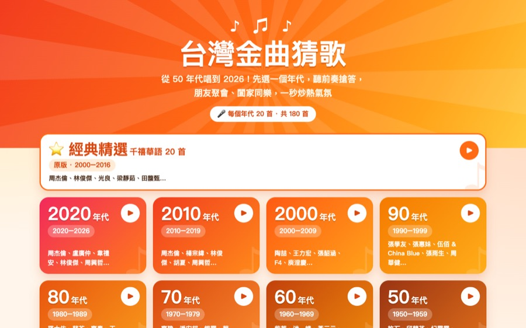
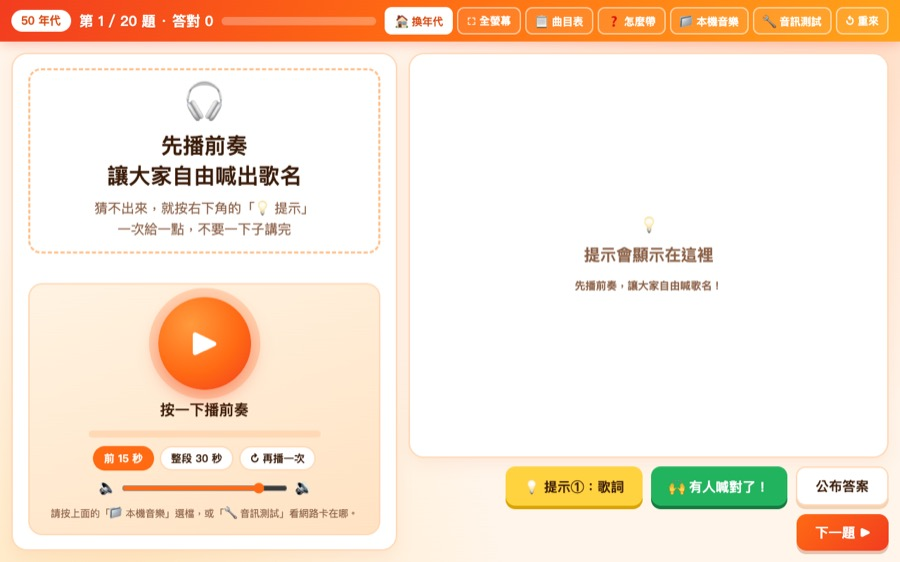
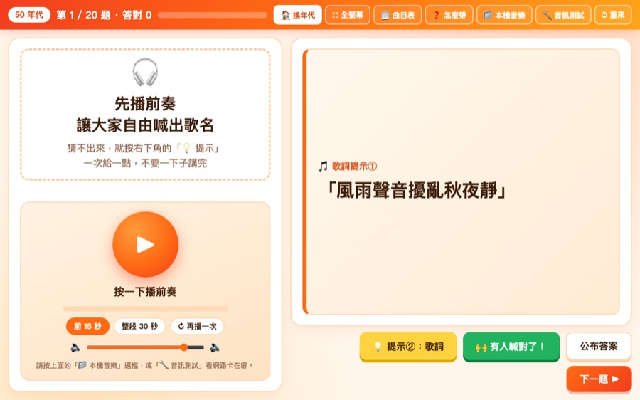
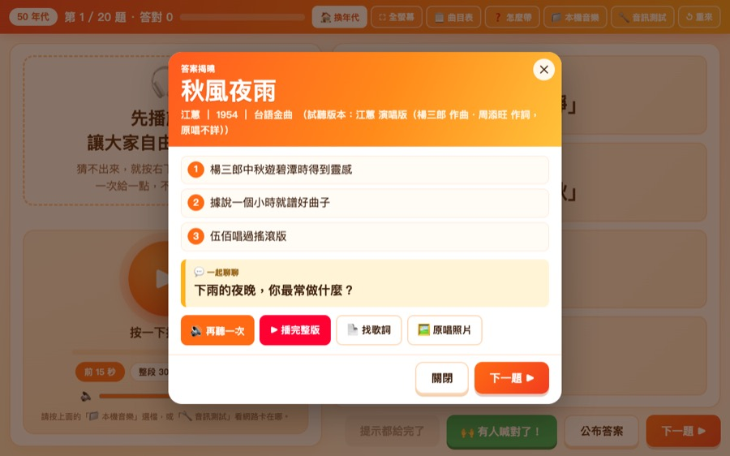
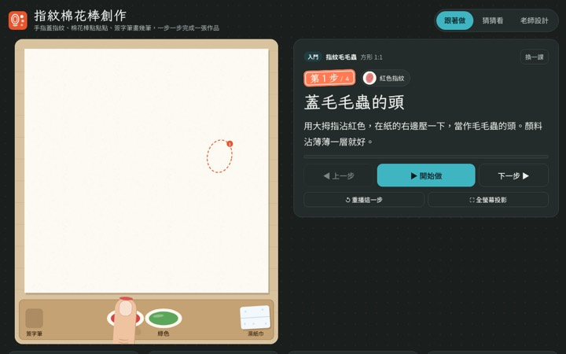
指紋棉花棒創作手指或棉花棒沾顏料點畫，握力弱也做得到。
適合：手部力量弱、中風單手開啟教案 →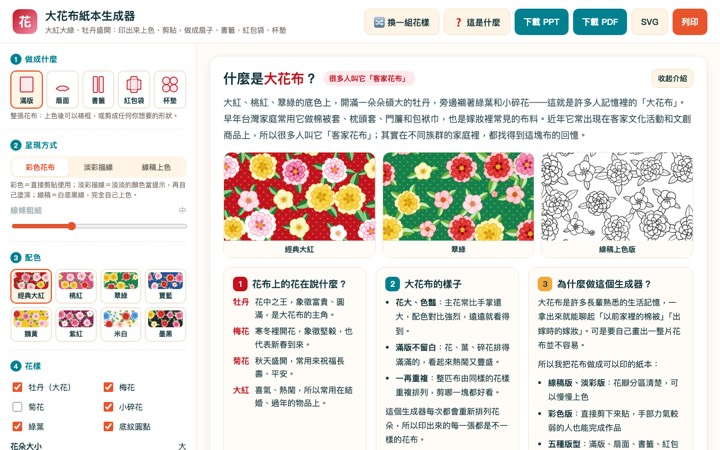
大花布上色牡丹、梅花、菊花的客家花布圖樣，可做書籤、紅包袋。
適合：喜歡傳統圖樣、可聊年節回憶開啟教案 →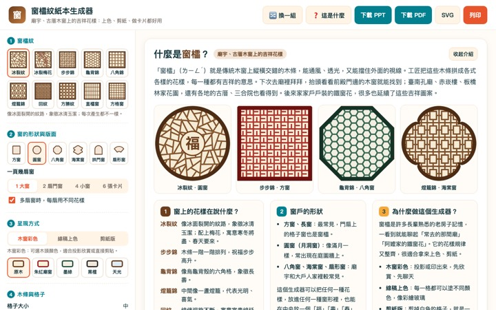
窗櫺紋上色老房子窗花的吉祥花樣，上色、剪紙或做卡片。
適合：可聊老家、三合院記憶開啟教案 →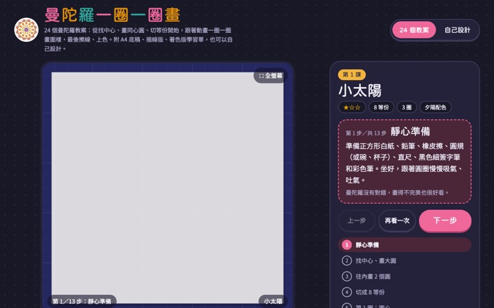
曼陀羅一圈一圈畫24 課教學動畫與 A4 學習單，安靜專注。
適合：喜歡安靜、容易焦躁的長輩開啟教案 →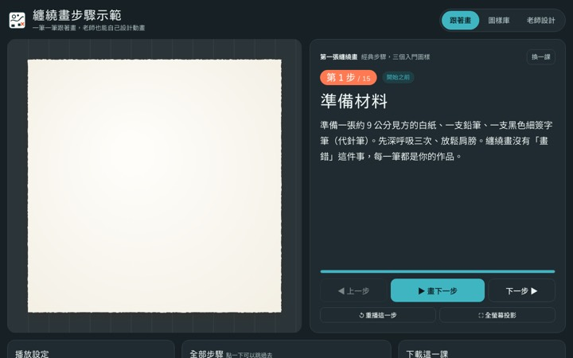
纏繞畫重複的簡單線條組成圖案，方形、圓形各 12 課。
適合：能握筆、認知較好的長輩開啟教案 →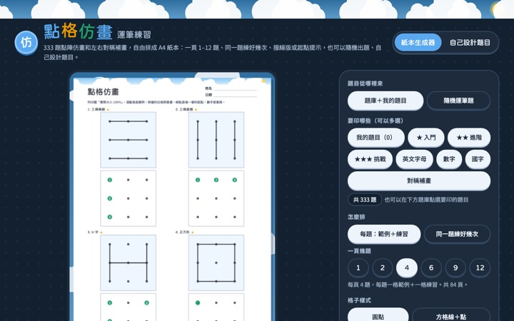
點格仿畫・運筆練習照著點陣連線仿畫，30 課由簡到難。
適合：輕度認知退化、想動動腦開啟教案 →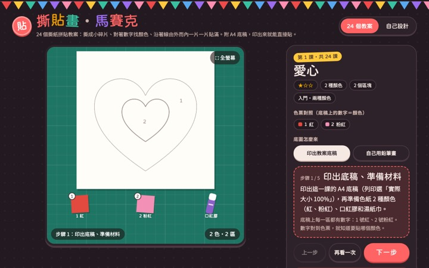
撕貼畫・馬賽克撕色紙貼成圖案，不用剪刀，手指活動量剛好。
適合：大多數長輩，安全好上手開啟教案 →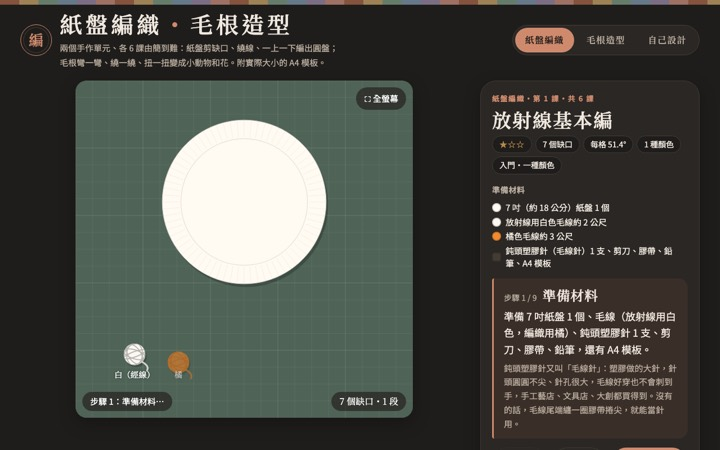
紙盤編織・毛根造型在紙盤上穿線編織，附實際大小 A4 模板。
適合：雙手能協調、以前會做女紅開啟教案 →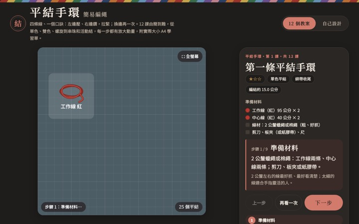
平結手環簡易編繩 12 課，完成後可以送給家人或志工。
適合：手指靈活、喜歡做禮物開啟教案 →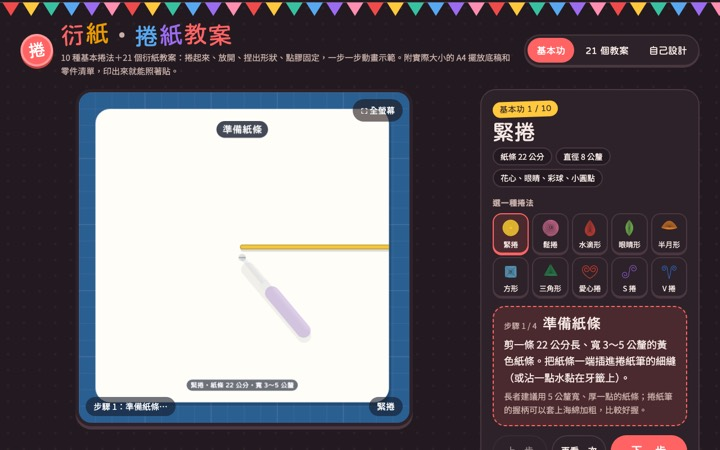
衍紙・捲紙把紙條捲成花朵，10 種基本捲法。
適合：手指細動作尚可的長輩開啟教案 →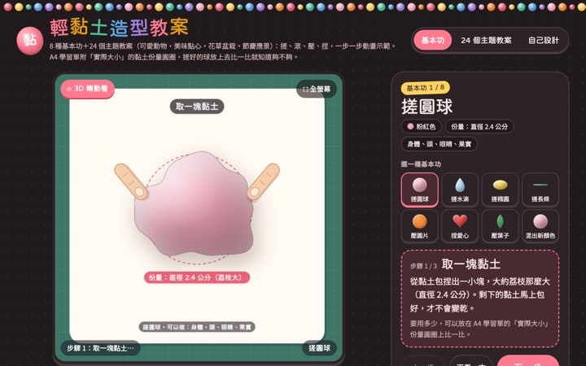
輕黏土造型8 個基本功與 24 個主題，捏、搓、壓訓練手部力量。
適合：認知清楚的長輩；失智長輩避免誤食開啟教案 →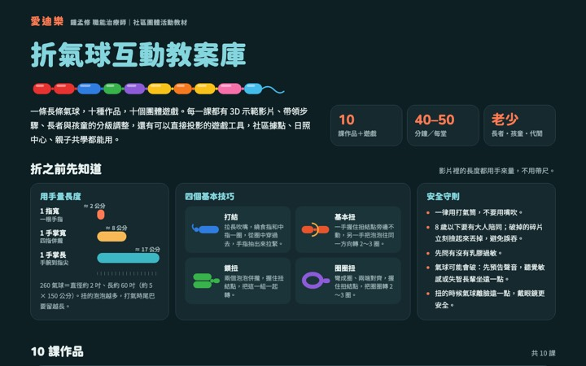
折氣球志工折、長輩挑顏色和造型，熱鬧又有驚喜。
適合：節慶訪視、臥床長輩當觀眾開啟教案 →長輩最怕的是「人突然不見了」。匆忙離開，容易讓長輩覺得被丟下，下次也比較難建立信任。訪視結束前 3–5 分鐘就開始收尾，用四個 F 慢慢把這次的陪伴收好。
說說今天一起做了什麼，幫長輩把這段時間留下來。
「今天我們看了老照片，您還教我唱〈望春風〉。」
說清楚下次什麼時候、誰會來、要做什麼，讓他有期待。
「兩個禮拜後的星期六上午，我和阿明再來，我們再看照片。」
把他的注意力帶到我們離開後的事情，不留空白。
「等一下就要吃午餐了，照服員小琪會來帶您去餐廳。」
說出你的感受和感謝，也聽聽他今天的感受，握手道別。
「今天跟您聊天我很開心，謝謝您。您今天覺得怎麼樣？」
| 觀察面向 | 留意這些變化 |
|---|---|
| 身體 | 新的瘀青或傷口、皮膚發紅破皮、喘、咳嗽、發燒、明顯變瘦、吃不下 |
| 精神 | 比上次更沒精神、更混亂、嗜睡、突然叫不出常用的詞 |
| 情緒 | 常哭、說不想活、對什麼都沒興趣、突然變得很害怕某個人 |
| 生活 | 衣物不乾淨、身邊沒有呼叫鈴或眼鏡助聽器、長輩反映被不當對待 |
通報方式：當場告知機構人員，事後告知雙福社工。只描述看到與聽到的事實，不下判斷、不在長輩或其他住民面前討論。
長輩的拒絕通常和疾病、疼痛或當天心情有關，不是針對你。換個時間、換個人，常常就不一樣。
相處久了會有感情，難過是自然的。可以和夥伴一起回想陪伴的片段，也可以請社工安排分享與支持。
陪伴是長跑。睡不好、提不起勁、一想到訪視就有壓力時，先跟社工說，適時休息也是負責任。
同樣 4 人一組、輪換角色。演長輩的人可以戴上耳塞、閉上眼睛，或用手比代替說話，體驗失能的感受。
林阿公，88 歲，重聽，助聽器放在抽屜沒戴。你說了兩次他都聽不清楚，開始揮手不想聊。
黃阿姨，70 歲，中風後右側無力、說話困難。她一直用左手指著床頭櫃，表情很著急。
吳伯伯，76 歲，退休公務員，車禍後雙腿無法行走。每次都背對你們，語氣冷淡。
周奶奶，84 歲，長期臥床。今天她握著你的手掉眼淚，說兒子很久沒來，不如早點走。
0963-598-419
02-8953-6701